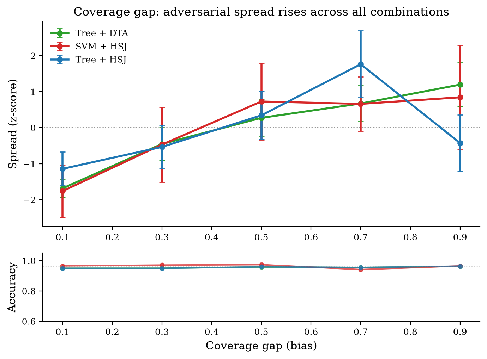
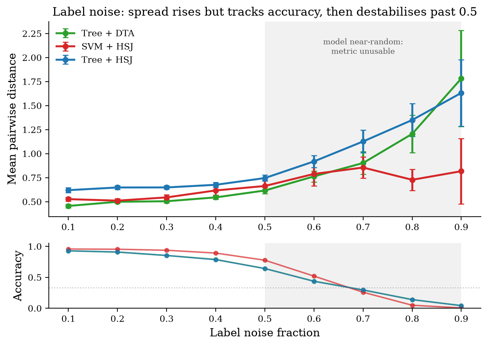
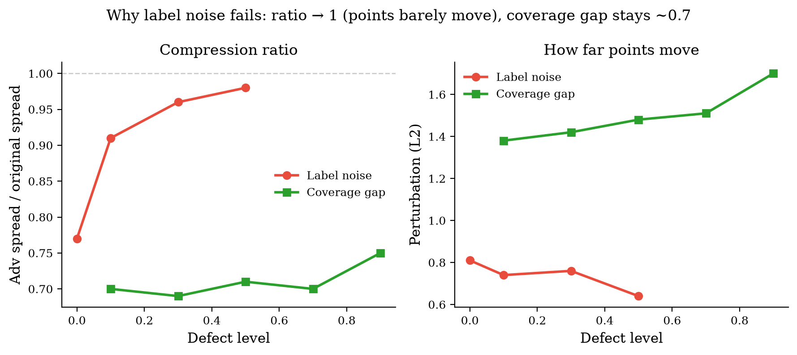

Detecting hidden dataset bias from the geometry of adversarial examples — with no access to the training data.
The same model can score 96% on the test set while its training data is missing an entire subpopulation of a class.
Accuracy says it's fine. The bias is invisible to every check we usually run — so how would you ever catch it?
An adversarial example is the smallest change to an input that flips the model's prediction to another class.
HopSkipJump sees only the predicted label — no gradients, no internals. It probes the boundary by trial and error.
Because it needs nothing inside, the same attack runs on a decision tree or an SVM — like a real external auditor.
Density (points per unit distance) and spread carry the same signal — one is the inverse of the other. We report spread because a distance is more interpretable:
It answers one question: are the attacks clumping or scattering?



Coverage-gap bias is detectable — the spread signal rises while accuracy stays flat.
The signal appears on the SVM under a purely black-box attack — no model internals needed.
Only iris so far — small, low-dimensional; density clustering may not survive higher dimensions.
A confound: the coverage gap also shrinks the test set ― the compression ratio shows the signal survives, but biasing only the training fold would fully isolate it.
Label noise moves the geometry too — but accuracy already collapses, so geometry adds nothing there.
Attack a model from the outside, watch where it breaks, and the spread of those failures reveals a blind spot that every accuracy check misses.